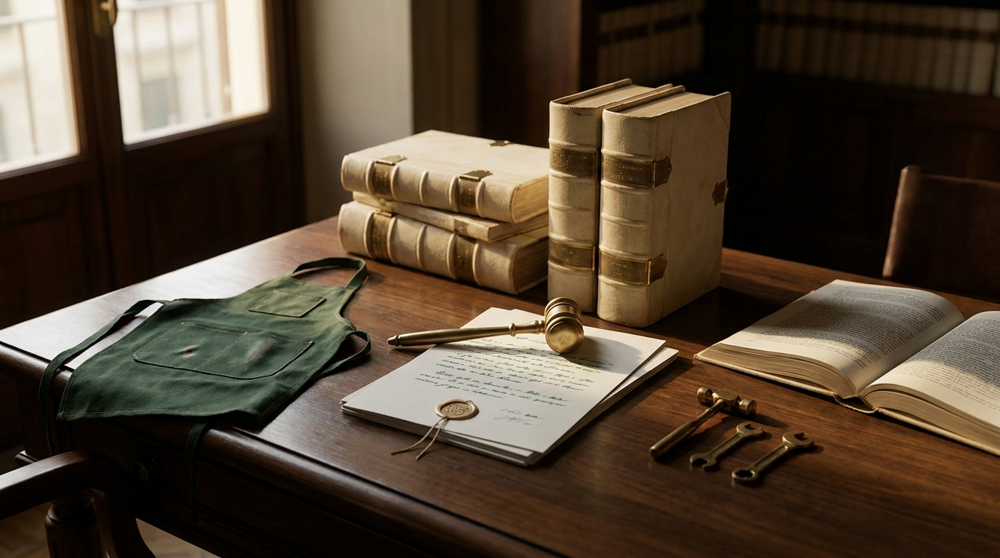

Lavoro minorile in Italia: il quadro normativo e cosa rischia chi lo impiega
Il 12 giugno 2026 la Giornata mondiale contro il lavoro minorile riporta al centro un fenomeno che resta attuale anche in Italia. ANMIL collega lo sfruttamento dei minori al divario sociale. Al di là dei dati, vale la pena ricordare cosa prevede l'ordinamento e quali responsabilità ricadono su chi impiega lavoratori in età non consentita.

Il contesto
La ricorrenza promossa dall'ILO richiama ogni anno l'attenzione su un problema spesso percepito come lontano. Le rilevazioni di ANMIL, UNICEF e ILO mostrano invece che il lavoro minorile interessa anche i Paesi avanzati, con bambini e adolescenti coinvolti in attività rischiose. ANMIL ne sottolinea il legame con le disuguaglianze socioeconomiche: dove cresce il divario sociale, cresce il rischio di sfruttamento.
Per chi opera in azienda, il tema non è solo etico. È una questione di responsabilità giuridica precisa, con conseguenze penali e amministrative.
Inquadramento normativo
Il punto di partenza è la Costituzione. L'art. 34 sancisce il diritto all'istruzione, anche gratuita, come tutela primaria del minore. L'art. 31 impegna la Repubblica a proteggere l'infanzia e la gioventù. Sono principi che orientano l'intera disciplina di settore.
La norma operativa è la Legge 17 ottobre 1967, n. 977, sulla tutela del lavoro dei bambini e degli adolescenti, modificata dal D.Lgs. 345/1999. La legge distingue due categorie: il bambino, minore che non ha ancora compiuto 15 anni o è ancora soggetto all'obbligo scolastico, e l'adolescente, minore tra 15 e 18 anni non più in obbligo scolastico.
La regola generale è netta: l'età minima per l'ammissione al lavoro è fissata al compimento dell'età in cui cessa l'obbligo scolastico, e comunque non inferiore a 15 anni (art. 3, L. 977/1967). L'obbligo di istruzione, ricordiamo, dura almeno dieci anni e si assolve di norma fino a 16 anni.
Esistono eccezioni controllate, ad esempio per attività culturali, artistiche, sportive o pubblicitarie, ammesse solo previa autorizzazione della Direzione territoriale del lavoro e con il consenso scritto dei genitori. Per gli adolescenti restano vietate le lavorazioni pericolose, faticose o insalubri elencate nell'Allegato I della legge.
Il datore di lavoro deve inoltre effettuare una valutazione dei rischi specifica prima di adibire un minore al lavoro (art. 7, L. 977/1967), garantire visite mediche preventive e periodiche e rispettare limiti rigorosi su orario, lavoro notturno e riposi.
Implicazioni pratiche
Per l'imprenditore le conseguenze della violazione sono significative. L'impiego di un minore al di sotto dell'età consentita integra un illecito penale, punito con l'arresto fino a sei mesi. A questo si aggiungono sanzioni amministrative per la violazione delle regole su orario, riposi e lavorazioni vietate.
Va poi considerato il profilo assicurativo e risarcitorio. In caso di infortunio del minore irregolarmente impiegato, l'INAIL può esercitare l'azione di regresso nei confronti del datore di lavoro, recuperando quanto erogato. La responsabilità civile per i danni resta piena, e l'impiego illecito aggrava la posizione del datore anche sul piano probatorio.
C'è infine un profilo reputazionale e di filiera. Le imprese strutturate sono sempre più tenute a vigilare anche sui fornitori, soprattutto in contesti internazionali dove il rischio di lavoro minorile lungo la catena di subfornitura è concreto.
Cosa fare in concreto
- Verificate l'età e la posizione scolastica di ogni nuovo assunto giovane, acquisendo documentazione idonea prima dell'inizio del rapporto.
- Predisponete la valutazione dei rischi dedicata ai minori impiegati e attivate le visite mediche obbligatorie preventive e periodiche.
- Controllate orari, riposi e lavorazioni: escludete i minori dalle attività vietate dall'Allegato I e dal lavoro notturno.
- Richiedete le autorizzazioni alla Direzione territoriale del lavoro nei casi eccezionali ammessi, con il consenso scritto dei genitori.
- Estendete i controlli alla filiera: inserite nei contratti con fornitori clausole sul rispetto dei divieti di lavoro minorile e prevedete verifiche periodiche.
La Giornata del 12 giugno è un'occasione per ricordare che la tutela dei minori non è un adempimento formale, ma un presidio di legalità che protegge l'impresa oltre che il lavoratore.
Disclaimer
Contributo informativo a cura di Tamburro & Partners - Avv. Giuseppe Tamburro. Non costituisce parere legale.
Ogni storia di lavoro ha i suoi tempi.
Se gestisci HR e vuoi un confronto su contenzioso, ispezioni o licenziamenti, scrivi allo studio. Ti rispondiamo entro un giorno lavorativo.